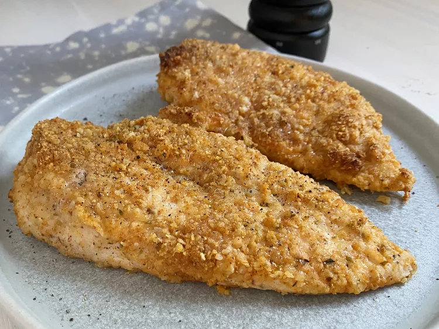

Parmesan Crusted Chicken

Parmesan Crusted Chicken
This is a simple and crispy oven baked chicken.
Ingredients
- 3 pounds chicken breasts
- 1 (12 fluid ounce) bottle Lawry's Herb & Garlic Marinade with Lemon Juice
- 1 ½ cups Parmesan cheese, grated
- ½ teaspoon garlic powder
- 1 teaspoon paprika
- 1 teaspoon dried oregano
Directions
- Thoroughly rinse chicken and pat dry with a paper towel. You can remove the skin if you like.
- Deeply pierce each piece of chicken 5 or 6 times with a knife or fork. In a large re-sealable plastic bag, combine chicken parts and the Marinade. Try to eliminate most of the air as you seal the bag. Gently shake to make sure all pieces are coated. Marinate in refrigerator for at least 30 minutes (or overnight).
- Preheat oven to 350 degrees F. Prepare a baking rack; oil or use a vegetable spray.
- Pour the Parmesan cheese onto a plate. Mix in the garlic powder, paprika and oregano.
- Remove chicken from marinade, discarding used marinade. Shake off excess liquid. Roll chicken onto the cheese to coat. Arrange the chicken on rack in a roasting pan. Bake in preheated 350 degrees F oven until meat is no longer pink and juices run clear. This will be about 40 to 45 minutes (approx. 180 degrees F).